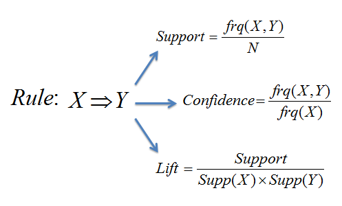

Association Rule Mining is a powerful tool that can be used to find connections within data. The process relies on the apriori algorithm which identifies high frequency items in a given "basket" or "set" and then proceeds to try and link them to other items and sets that become progressively larger. If a small grouping of items is linked often, a rule can be created, and then progressively larger subsets of that rule will be examined. If there is no link, then the algorithm continues instead of wasting time checking if a larger set containing the unlikely small set appears often. This process continues finding all sets that appear often enough (determined by given thresholds) which result in the form of association "rules". These rules can then be used to inform decision making. For instance, if a store owner knows that coffee and milk are bought together very often, there is no benefit from placing them close together in the store (in fact you may want to place them far apart so the customer walks through more of the store, and potentially buys extra goods). Insights such as these can be used to inform all forms of decision making and have particularly relevant applications in areas like product placement and recommendation services (like Netflix and Amazon).
When using ARM, the association rules created are evaluated using three metrics; support, confidence and lift. Support is the probability that X and Y (two variables, in text data this could be two words or two groupings of words) occur together in a given transaction. The higher the support, the more often this pairing is seen in the data.Confidence represents the conditional probability of Y occurring given that X is present. A confidence of 1 indicates that every time X appears, Y is also in the transaction. Confidence is always greater than support. Lastly, lift is a measure of independence and is calculate by dividing the support by the probabilities that X and Y occur on their own. A lift of 1 indicates that X and Y co occur as often as each would co occur if X and Y were independent (P(X ∩ Y)= P(X)*P(Y) if lift = 1). Lift above 1 indicates the variables co occur more than expected and vice versa for lift lower than 1. A usable rule ideally would have high values for each of the metrics. The equations for these metrics are shown below.
When performing ARM, data must be formatted into transaction format. This means that each row represents a transaction or a 'basket' of goods, objects, or in this case words. For ARM on twitter data, each row is a tweet and each column in that row is a word making each tweet its own transaction. Doing this makes it possible to form associations between words used throughout the collected twitter data.
The tweets were stored in individual csv files for each respective search, but there are also files compiling all the searches into one master file and a file storing the allstar, legend, and superstar searches due to the close similarity found between them in the clustering process. The raw tweet data corpus now has to be cleaned. Currently, the rows contain many unhelpful words such as "t.co" and "https" which are very common as seen in the snippets form the All_searches csv file below.
To solve issues like removing unnecessary words, digits, and words that are either too short or too long (words with 3 or less letters or 12 or more) a cleaning process had to be undertaken for each of the csv files using this code:
Now, the most frequent items and new data look different:

With all of the files ready for analysis (can be found here) cleaned with this code. R has the library arules that allow for reading and analyzing transaction data. Once the transactions are read, rules are created based off of specific cutoffs for support and confidence. For this project, the most interesting collection of text data to look at are the searches that clustered together which were the searches for "allstar","legend", and "superstar". By looking at these association rules, a deeper understanding of what makes these types of players special can be gleaned.
First, the top 15 rules organized by support are presented below. The graph links the rules and the dots are color coded based on the lift measure. The larger the dot the higher the support and the darker red the dot the higher the lift.
Right away, it is clear that these rules are dominated by recent conversations in NBA news, which is unsurprising given that the tweets are collected from the previous week's time. At the time of the search, NBA news is dominated by Kyrie Irving and his decision to not get vaccinated, thus not allowing him to play in home games (per NY state regulations). Since these rules are sorted by support, the top of the list includes word pairs that co occur the most often in the dataset. Based on the results, many of the most commonly occurring word pairs involve Kyrie. A couple of rules that are of genuine interest are {kyrie} => {superstar} and {time} => {superstar}. The first rule is of interest simply because it identifies the linkage between kyrie and superstar, which happens to be an accurate rule. Although not insightful, it is good to see rules that confirm what is already known. the ladder rule is more insightful and in agreement with what was found in the clustering process (where there was a connection between being a superstar/allstar/legend and being consistent). Here, the time component of consistency is picked up and provides further support to the notion that being and becoming a superstar takes time (years in many cases). This rule did not have very high confidence (not a big deal given the general way in which the word 'time' can be used) but its lift does indicate that there is a real association.
The top 15 rules organized by confidence for the same search with an igraph network plot:
Confidence is the probability that the Y variable appears given the presence of the X variable. Notice that almost all of these rules contain 'superstar' or 'legend' as the Y variable. This text data was formed from the combination of searches involving these terms so it is unsurprising that given the presence of any word the probability that one of the three main search terms appear should be in theory around 1. Given that the data is a combination of three search terms it makes interpretation of confidence slightly more effective. Once again, the apriori algorithm picked up on some accurate patterns. The link between Kyrie Irving and superstar is once again present, it also picks up on LeBron (referring to LeBron James) being a superstar. The most interesting rule of all out of this set is the one linking celtics and legend. The Boston Celtics are one of the most storied franchises in basketball (arguably second behind the Lakers) and boast a long history of legendary players being on their roster. This rule has very high confidence and lift demonstrating the close linkage between the team and its history.
Lastly, the top 15 rules organized by lift:
Here is an interactive graph of the network data using vizNetwork with labels for lift.
The higher the lift, the more the word pairs co occur more than expected if each were independent variables. Many of the rules are similar to those high in support and confidence, if not the same. A rule linking Kyrie to his last name has exceedingly high lift, not surprising given that his first and last name are certainly not independent of eachother. More interesting is the lift on the rule linking Kyrie to being a superstar as it shows just how strong the linkage in the public consciousness is between him and superstardom.
The code used for creating the rules and developing the graphs and tables is linked here.
The NBA stats data proves challenging for ARM as continuous numerical data is not an appropriate data format to effectively perform ARM. For instance, if two players have a 44% and 45% three point percentage (both very high) and 55% and 56% field goal percentages (also both high), feeding in the data to the apriori algorithm would yield two potential rules: {44}=>{55} and {45}=>{56}. This is unhelpful and given the uniqueness of the numerical numbers this will create poor rules. With those 2 rows of data, the desired rule would be {high 3p%}=>{high fg%}. This is a better rule on multiple fronts as it is more interpretable and will be found more times in the data rather than a unique pairing of two numbers. As a result, preparing the record data for ARM requires discretization or binning (in this case into categories described by words). Fortunately, this can be done with ease and in many ways with numeric data. The chosen method for this data was to bin based off of quartiles. For each variable, the bottom quartile of data points were renamed "Bottom + (column name)", the 2nd quartile was described as "Low", then "High" for the third and lastly "Top" for the fourth using the process shown below (the code is linked here):
The clean numeric data looks like this prior to the change to transaction format:
Now, each row has descriptive words for each column (words that occur 25% of the time within a given column) as opposed to numerical data. This allows for running the apriori algorithm and finding interpretable and potentially useful insights on the Record Transaction data with an image shown below.
The top 15 rules sorted by support are shown below. The network graph links the rules by support (the size of the circles) and color coded by lift:
All of these rules link aspects of player statistics very much as expected. For instance, it is reasonable to assume that those players who shoot with high effective fg% also have high true shooting % because they are high efficiency scorers no matter the metric. Additionally, those who are short are associated with having lower weights (also not surprising). All of these rules have very high confidence and lift indicating these relationships are found throughout the data. Although these rules did not reveal anything insightful, they do point out associations that should be found often within the data.
The top 15 rules sorted by confidence with an igraph network plot are:
Similar to the high support rules, the rules sorted by confidence are not groundbreaking. One note to point out are the associations with 2k rankings. These associations are largely with shooting and efficiency stats. This is relevant because it shows that 2k Ratings are a usable metric for evaluating at least offensive stats. Those with high 2k Ratings are elite scorers.
The top 15 rules by lift are:
Here is an interactive graph linking the associations and labeling them with their lift.
Once again, the rules did not provide anything unique. All of the rules do have extremely high lift, so although expected, it does indicate that these associations are very real within the data.
The code used for creating the rules and developing the graphs and tables is linked here.
ARM lead to some interesting findings that mainly served to identify expected patterns within the data. For instance,
players with high PER's also have high true shooting attempts and percentages. This type of information would be found in any correlational
measurement. The main interesting pattern to note is how the main rules in the record data found associations mainly in the tops and bottoms
of specific stats, as opposed to the middle tiers. Similar to the results from the clustering analysis, the top and bottom tiers of players are
the easiest to identify and predict.
The text data was more interesting. Given that the tweet data was gathered from the previous week, the rules were dominated by recent
news especially regarding the Kyrie Irving vaccine saga. Although many of the rules do not provide helpful information, the ability for analytical
methods like ARM to pick up on particular trends in the NBA is impressive and could be better utilized as a barometer for current sentiment than anything
else. However, the text data did reveal some rules that were interesting. Similar to the findings in the clustering process, the notion of superstardom and
a time component are once again linked. These pieces of evidence are beginning to help answer the question of "what makes a star a star?" High performance
alone is not enough, the continuation over time of that high level of play is what matters. This also sheds some light into what fans think;
consistency in and of itself is a valuable trait. This is not a groundbreaking result, but one that has continued to show through in the data
and is thus worthy of consideration.